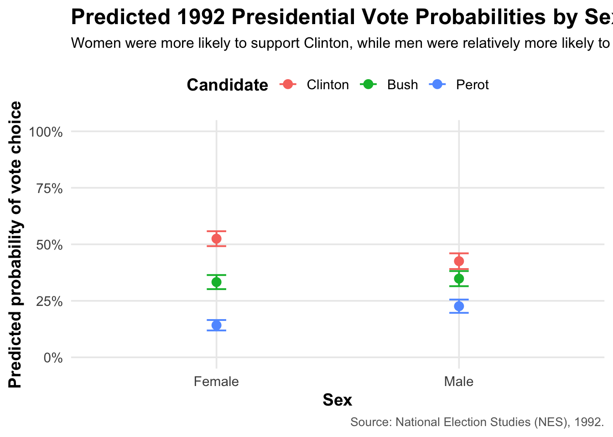

Four Parameters Categorical
Voting preferences may vary on the basis of sex, and understanding this relationship is crucial for designing effective campaign strategies. Using the nes data including information from the American National Election Studies survey, we investigate male and female voting preferences for the Bush, Clinton and Perot in the 1992 US presidential election. Our data is limited in that it comes from a survey: those who answer surveys may not be representative of voters in the 1992 US presidential election. We model voting as a multinomial function of voters’ sex. We found that males voted less for Clinton and more for Bush compared to females.
\[P(Y = k) = \frac{e^{\beta_{k0} + \beta_{k1} X_1 + \beta_{k2} X_2 + \cdots + \beta_{kn} X_n}}{\sum_{j=1}^{K} e^{\beta_{j0} + \beta_{j1} X_1 + \beta_{j2} X_2 + \cdots + \beta_{jn} X_n}}\]
with \(Y \sim \text{Multinomial}(\boldsymbol{\rho})\) where \(\boldsymbol{\rho} = (\rho_1, \rho_2, \ldots, \rho_K)\) are the probabilities above.
Let Bush be the baseline category. Then the model is:
\[ \log\left(\frac{\pi_{i,\text{Clinton}}}{\pi_{i,\text{Bush}}}\right) = \beta_{0,\text{Clinton}} + \beta_{1,\text{Clinton}} \cdot \text{sex}_i \]
\[ \log\left(\frac{\pi_{i,\text{Perot}}}{\pi_{i,\text{Bush}}}\right) = \beta_{0,\text{Perot}} + \beta_{1,\text{Perot}} \cdot \text{sex}_i \]
| Multinomial Logistic Regression Results | |||||
| 1992 U.S. Presidential Vote by Sex | |||||
| Outcome (Baseline: Bush) | Term | Estimate | Std. Error | CI Lower | CI Upper |
|---|---|---|---|---|---|
| Clinton vs Bush | Intercept | 0.46 | 0.07 | 0.31 | 0.60 |
| Clinton vs Bush | Male (vs Female) | −0.26 | 0.11 | −0.47 | −0.04 |
| Perot vs Bush | Intercept | −0.85 | 0.11 | −1.06 | −0.64 |
| Perot vs Bush | Male (vs Female) | 0.42 | 0.14 | 0.14 | 0.70 |